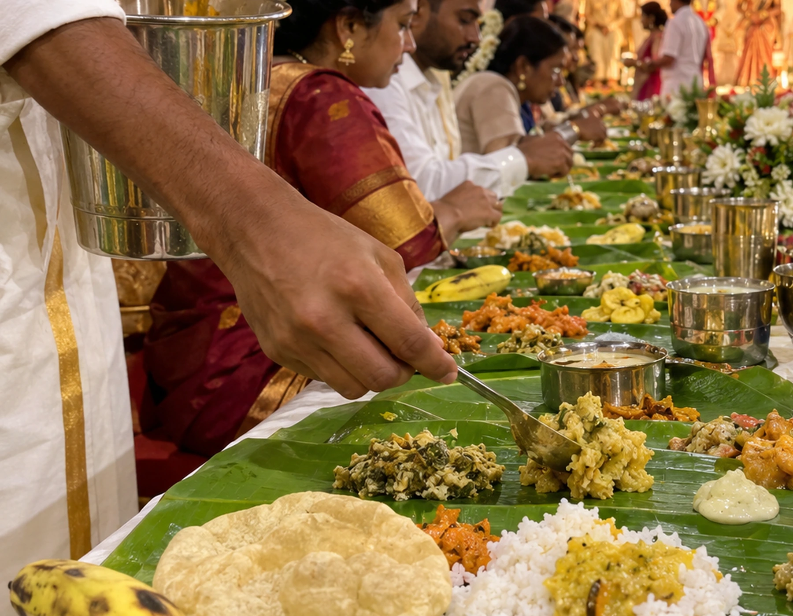
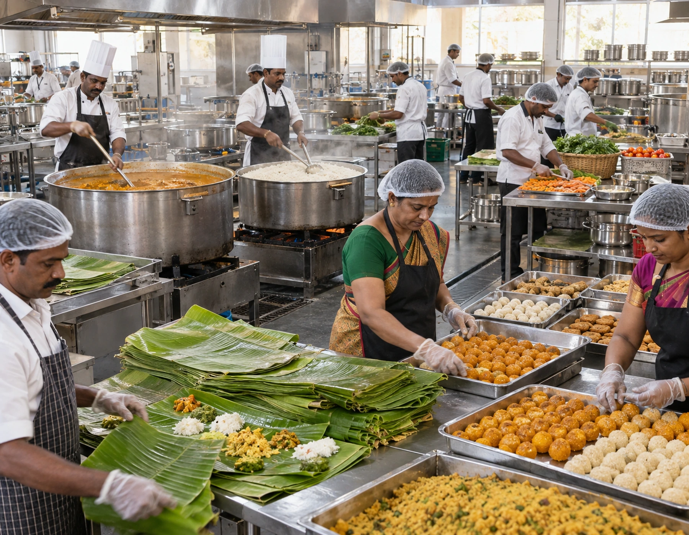
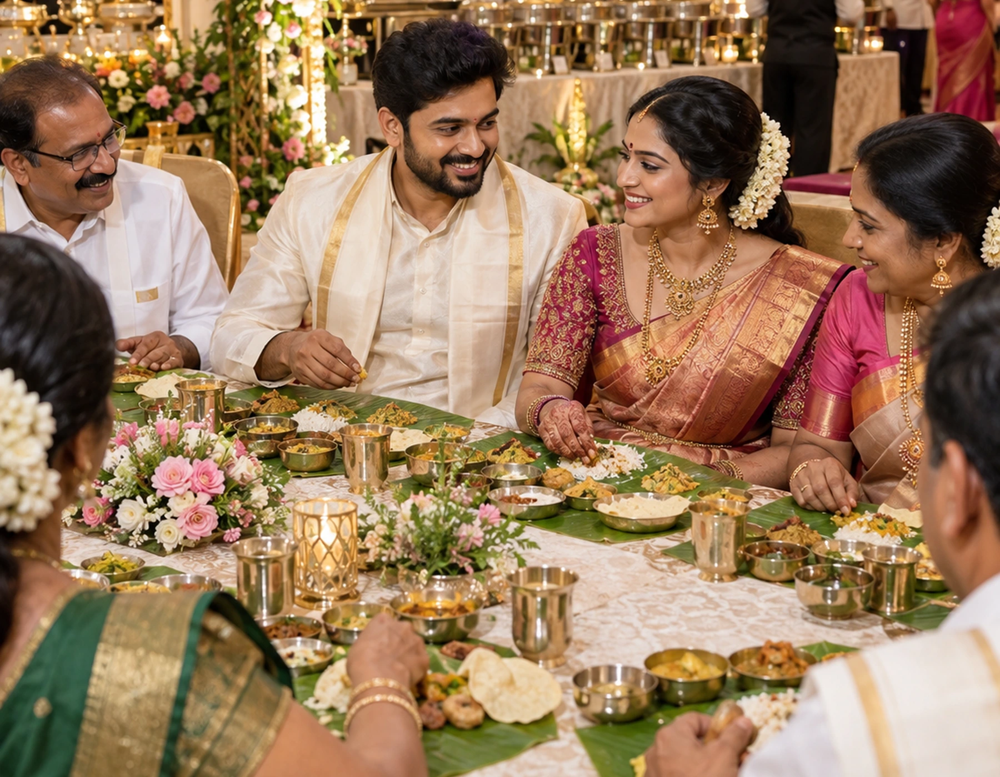
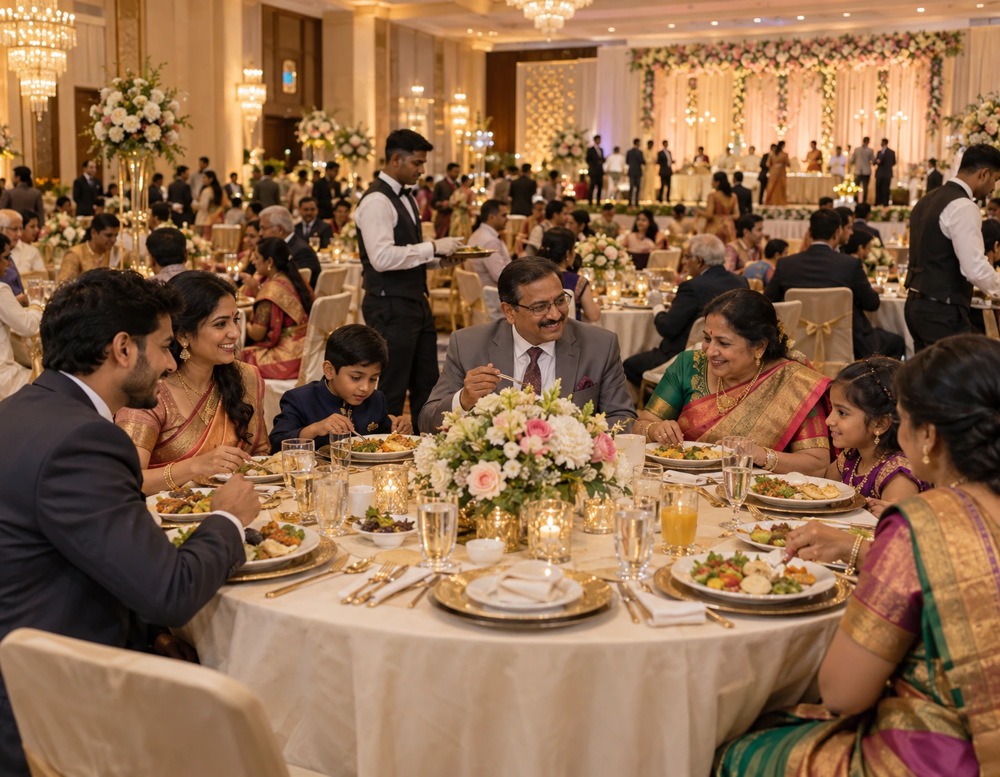

Traditional Brahmin and Sattvic functions need more than a vegetarian menu. Vellore Catering World plans the cooking sequence, banana-leaf service order, muhurtham breakfast, family and priest dining, filter-coffee hospitality and any host-specified no-onion/no-garlic requirements as one coordinated service plan.
Brahmin & Sattvic Catering in Vellore
Traditional vegetarian/sattvic menus. Plan the menu, service format and event logistics around your guest list and venue. For brahmin/sattvic catering, this detail is checked against the venue and guest profile.
For a traditional wedding, breakfast, ceremony activity and the main meal are closely connected. We first understand the muhurtham window, priest requirements and family schedule, then build the kitchen and serving plan backward from those timings.
Plan the catering clock around the muhurtham, not around a generic meal time
For Brahmin/Sattvic Catering, this section concentrates on spice calibration; the recommendation should be checked against programme breaks, guest count and the actual venue before confirmation.
In Brahmin/Sattvic Catering, dessert pairing is best decided alongside guest count and venue conditions. It is then easier to match special portions to the real pace of the function.
Share the venue, approximate guest count, meal timing and food preferences. The catering scope can then be shaped around the real event rather than a generic package. For brahmin/sattvic catering as a cuisine-focused event, the detail is adapted before confirmation.
If the family requests a no-onion/no-garlic or other traditional Sattvic preparation, that requirement is treated as a kitchen rule rather than a label added later. Procurement, prep tables, seasoning and service vessels are planned accordingly.
Keep the menu genuinely Sattvic when the host requests it
Clear planning before cooking helps reduce last-minute service problems. For brahmin/sattvic catering, this detail is checked against the venue and guest profile.
Muhurtham breakfast deserves its own production plan
Idli, pongal, vada, dosa, chutney, sambar and filter coffee all have different holding limits. Breakfast quality depends on staggered production and fast replenishment, not on preparing everything at once.
Use filter coffee as hospitality, not merely a beverage counter
Traditional filter coffee often begins before the formal meal and returns after tiffin or lunch. We plan brewing batches, milk handling, tumblers and service staff so the coffee remains hot and consistent through guest waves.
Respect the traditional banana-leaf serving sequence
A Brahmin-style meal has a natural serving rhythm. Salt, pickle, pachadi, poriyal, kootu, sweets, rice, sambar, rasam, curd and finishing items should arrive in a coordinated order rather than as an unstructured buffet.
Separate priest and close-family meal timing when necessary
Priests, elders and immediate family members may need to eat at different points because of ceremony duties. We plan a protected meal window so important participants are served properly without delaying the guest dining flow.
Traditional does not mean excessively spicy. We balance heat, sourness, coconut, pepper and tempering so the meal works for elders, children and guests while keeping the intended regional character.
Control spice and seasoning for a broad family audience
The exact scope is finalised with the quotation; these are the normal planning components. The final brahmin/sattvic catering choice is confirmed with the event schedule.
Use course balance to guide staffing and replenishment choices for Brahmin/Sattvic Catering.
Keep dessert pairing practical for the available setup space during Brahmin/Sattvic Catering.
Use spice calibration to guide staffing and replenishment choices for Brahmin/Sattvic Catering.
Match authentic accompaniments to the guest count, venue and timing for Brahmin/Sattvic Catering.
Include course balance in the event-day checklist for Brahmin/Sattvic Catering.
Review course balance with the host when finalising Brahmin/Sattvic Catering quantities and service flow.
Laddu, jangiri, mysore pak, badusha, payasam or family-selected bakshanam may be served at different moments. We calculate quantities and release timing instead of placing the entire sweet allocation out at once.
Treat sweets and bakshanam as part of the event sequence
Service can be scaled to suit the guest list, venue and timetable. For brahmin/sattvic catering, this supports authentic flavour profiles, balanced courses and menu coherence.
Build kitchen discipline around vegetarian-only production
The back-of-house plan is organised around clean vegetarian prep, clearly assigned vessels, vegetable cutting, rice production, sambar and rasam batches, sweets, curd handling and banana-leaf staging.
Use smaller cooking batches where freshness matters most
Items such as vada, appalam, dosa, certain vegetables and coffee benefit from shorter cycles. We use smaller, repeated batches so the meal tastes freshly prepared instead of held for long periods.
Choose accompaniments that support the main meal rather than crowd it
A well-planned traditional meal feels complete because each poriyal, kootu, pachadi, pickle and sweet has a role. We avoid unnecessary repetition and focus on a coherent combination of flavours and textures.
Plan dining rows and service lanes before the first guest sits
Banana-leaf dining works smoothly only when servers can move in a clear direction. We review row spacing, water access, vessel movement, leaf placement and clearing routes before service begins.
Senior guests may need easier seating, faster water service and help reaching dining areas. When appropriate, we schedule an earlier or assisted serving window for them.
Serve elders without making them wait through the peak rush
Choose courses according to the time of day and how guests will be served. For brahmin/sattvic catering, this detail is checked against the venue and guest profile.
Keep rice, sambar and rasam replenishment tightly coordinated
The centre of the meal depends on these high-volume items. The kitchen captain and dining captain need matching batch timings so servers never reach a row without the next vessel ready.
Protect curd, buttermilk and dairy items from heat
Curd rice, pachadi, buttermilk and milk-based sweets need sensible temperature control. We stage them closer to their service time instead of keeping them exposed unnecessarily.
Use banana leaves that are clean, well sized and staged correctly
Leaf quality affects both presentation and speed. We sort, wipe and stage leaves before the dining cycle so rows can be reset quickly without compromising cleanliness.
Coordinate appalam and fried items with actual seating batches
Fried items lose quality quickly. We plan frying and distribution around the real number of guests seated in each wave rather than guessing the entire function count at once.
Traditional Brahmin catering is remembered for balance, serving order and freshness. A focused menu executed well generally feels more authentic than a very long list with repeated flavours.
Make the main meal satisfying without turning it into an overloaded menu
Keep one clear flavour direction or combine cuisines carefully. For brahmin/sattvic catering as a cuisine-focused event, the detail is adapted before confirmation.
Confirm authentic accompaniments for Brahmin/Sattvic Catering before the final event brief is closed.
Link course balance to the serving sequence rather than treating it as an isolated menu choice.
Review dessert pairing with the host when finalising Brahmin/Sattvic Catering quantities and service flow.
Use course balance to guide staffing and replenishment choices for Brahmin/Sattvic Catering.
Confirm regional flavour for Brahmin/Sattvic Catering before the final event brief is closed.
Children may prefer milder sambar, plain rice, curd rice, potato preparations or simple sweets. These can be accommodated without creating a completely separate catering operation.
Prepare separate child-friendly choices within the same meal logic
This is an illustrative starting point; every final menu should be confirmed separately. For brahmin/sattvic catering, this detail is checked against the venue and guest profile.
Account for fasting, ritual and delayed-meal requirements
Some close family members or priests may have specific meal timing due to ritual participation. We identify those needs before the event and hold suitable fresh portions for the correct time.
Use visible service captains for each dining zone
A large traditional meal needs someone watching leaf placement, water, rice, gravies, sweets and clearing in real time. Zone captains help correct gaps before guests notice them.
Finish the meal with the same discipline used to start it
Curd, buttermilk, banana, beeda where requested, sweets and coffee should not feel like an afterthought. We plan the closing sequence so guests can finish comfortably and tables reset cleanly.
Match the service style to the family tradition
Different families follow different menu preferences and serving customs. We use the host’s requirements as the operating brief rather than assuming every Brahmin or Sattvic function should look identical.
The planning here centres on muhurtham timing, vegetarian kitchen discipline, traditional tiffin, banana-leaf serving order, family and priest meals, filter coffee, sweets and host-specified Sattvic requirements instead of generic wedding or reception catering logic.
This page is specifically built for Brahmin and Sattvic catering
The best menu is the one that fits your event rather than the longest menu. For brahmin/sattvic catering as a cuisine-focused event, the detail is adapted before confirmation.
Clarify whether the family wants Iyer, Iyengar or a neutral traditional menu style
Families may use the term Brahmin catering differently. We ask what their own home tradition expects instead of assuming one fixed menu or serving pattern.
Decide the breakfast sweet separately from the lunch sweet
Serving the same sweet twice can make a long function feel repetitive. We help choose distinct breakfast and lunch sweet options when the schedule includes both meals.
Plan coconut-based dishes around freshness and holding time
Fresh coconut is central to many traditional preparations but can lose quality in heat. We time grinding, tempering and service close to the actual meal window.
Use ghee purposefully rather than heavily
Ghee can lift pongal, sweets, rice and selected accompaniments, but balance matters. We plan where it contributes to flavour instead of applying it uniformly to every dish.
Strong condiments should complement the meal rather than dominate it. Small, measured portions also reduce waste while allowing guests to request more.
Keep podi, pickle and thokku portions controlled
Counters should add theatre without creating queues or slowing the main meal. For brahmin/sattvic catering, this supports authentic flavour profiles, balanced courses and menu coherence.
Check whether dessert pairing needs a separate service station for Brahmin/Sattvic Catering.
Keep dessert pairing practical for the available setup space during Brahmin/Sattvic Catering.
Keep menu coherence practical for the available setup space during Brahmin/Sattvic Catering.
Use regional flavour to guide staffing and replenishment choices for Brahmin/Sattvic Catering.
Check whether regional flavour needs a separate service station for Brahmin/Sattvic Catering.
Milk-based and jaggery-based payasams behave differently in production and holding. We select a style that fits the meal, weather and kitchen setup.
Choose one strong payasam direction for each meal
Venue layout, guest profile and meal duration influence the right format. The final brahmin/sattvic catering choice is confirmed with the event schedule.
Record the decision on dessert pairing so the Brahmin/Sattvic Catering team has one clear instruction.
Link dessert pairing to the serving sequence rather than treating it as an isolated menu choice.
Include course balance in the event-day checklist for Brahmin/Sattvic Catering.
Record the decision on spice calibration so the Brahmin/Sattvic Catering team has one clear instruction.
Curd rice tastes best when its temperature and texture are protected. We prepare and release it in batches rather than keeping a full quantity waiting too early.
Stage curd rice closer to the end of service
Capacity depends on menu complexity, venue facilities, staffing and service window. For brahmin/sattvic catering, this supports authentic flavour profiles, balanced courses and menu coherence.
Time rasam so its aroma reaches the dining row fresh
Rasam loses character if it sits for too long. We align tempering and vessel movement with the seated dining batches.
Treat sambar vegetables as a menu choice, not an afterthought
The vegetable used in sambar changes the overall meal profile. We coordinate it with kootu, poriyal and other gravies so the menu does not repeat the same ingredient.
Balance dry and gravy vegetable preparations
A good leaf feels varied because textures change across the meal. We pair a drier poriyal with a softer kootu or pachadi rather than repeating similar consistencies.
Seasonal vegetables can make the meal taste more natural and can simplify sourcing. We propose them only when they fit the family’s preferred style.
Use seasonal produce where it improves the traditional menu
A simple sequence keeps decisions clear. For brahmin/sattvic catering, this detail is checked against the venue and guest profile.
Confirm whether garlic, onion or asafoetida restrictions apply
Different families have different ingredient rules. These details are confirmed before procurement so the kitchen does not rely on last-minute substitutions.
Separate tasting approval from final event seasoning
A tasting is useful, but event-scale vessels behave differently. We document the approved flavour profile and recalibrate carefully during bulk production.
Build the rice plan from actual seating capacity
Rice output is tied to the number of guests seated in each wave, not simply the total invitation count. That prevents both shortages and excessive holding.
Keep a reserve of plain rice for elders and special requests
A small reserve of plain rice supports guests who prefer lighter combinations, curd rice or less-spiced accompaniments.
Plan second servings without slowing the full row
Guests often request extra sweet, curry or rice. Servers should handle these requests without blocking the main serving sequence.
Consistent placement makes the dining experience feel organised. The team is briefed on where each item belongs and how to move through the row.
Train servers on leaf position and serving direction
Discuss food safety expectations at the same time as menu choices. For brahmin/sattvic catering as a cuisine-focused event, the detail is adapted before confirmation.
Include spice calibration in the event-day checklist for Brahmin/Sattvic Catering.
Link spice calibration to the serving sequence rather than treating it as an isolated menu choice.
Include menu coherence in the event-day checklist for Brahmin/Sattvic Catering.
Use authentic accompaniments to guide staffing and replenishment choices for Brahmin/Sattvic Catering.
Check whether dessert pairing needs a separate service station for Brahmin/Sattvic Catering.
Water service should not compete with hot-food movement. Dedicated runners keep tumblers filled while the meal sequence continues.
Use separate runners for water and food vessels
Good service starts before the food reaches the venue. For brahmin/sattvic catering, this detail is checked against the venue and guest profile.
Keep hot vessels off guest pathways
Large sambar, rasam and rice vessels need safe movement routes. We plan aisle width and refill points so guests are not crossing the same path.
Place wash areas where dining rows can turn over smoothly
Handwash access affects how quickly guests enter and leave the dining zone. We review the route so queues do not build beside active serving rows.
Prepare a quiet meal option for priests after rituals when requested
When ceremony duties delay a priest’s meal, we reserve fresh components and serve them at the agreed time instead of relying on leftovers from an earlier batch.
Keep the bride and groom meal practical around ceremony duties
The couple may have only a short eating window. We coordinate their meal with the family so they receive fresh food without being rushed through the full crowd.
Late-arriving close family should not miss signature sweets simply because the first batch finished them. We hold a planned reserve.
Reserve sweets for relatives who arrive after the first meal wave
Different people own production, coordination and guest-facing service. The final brahmin/sattvic catering choice is confirmed with the event schedule.
Plan packed portions only when the host specifically needs them
Takeaway food can create confusion in a traditional dining setup. If the family wants packed meals, we define quantity, packaging and pickup timing separately.
Keep serving vessels matched to the food they carry
Different gravies, rice, curd and sweets need suitable vessels and ladles. Correct vessel sizing improves speed and portion control.
Label kitchen zones for the team even when guest areas stay traditional
Back-of-house clarity can remain modern and practical. Internal prep labels and responsibility zones help staff maintain the family’s ingredient rules accurately.
A designated kitchen lead checks salt, spice and consistency before vessels move to service, reducing variation between batches.
Use one person to approve seasoning before each large batch leaves the kitchen
Representative stock photographs (free Pexels licence) shown for planning inspiration; they are not presented as photographs of past client events. For brahmin/sattvic catering as a cuisine-focused event, the detail is adapted before confirmation.

Close view of a traditional vegetarian banana-leaf meal with rice, curries and accompanimentsBrahmin and Sattvic wedding catering, kitchen preparation and banana-leaf dining
Piece-count items need different control from rice or sambar. We monitor production and release numbers so every dining batch receives its share.
Track sweet and vada counts separately from bulk gravies
The photos below are representative stock images for presentation ideas, not records of past client events. For brahmin/sattvic catering, this detail is checked against the venue and guest profile.

Large vegetarian wedding kitchen preparing rice, gravies and service batches

South Indian family hospitality and seated dining during a traditional wedding function

Guest dining flow and family table service at a traditional vegetarian wedding celebration
If the same room is reused, cleaning, leaf disposal and table reset timing become part of the catering plan rather than a venue-only task.
Confirm whether breakfast and lunch use the same dining hall
No client event is invented here; this transparent sample shows the planning logic. For brahmin/sattvic catering as a cuisine-focused event, the detail is adapted before confirmation.
Illustrative planning scenario: a 544-guest cuisine-focused event in Vellore with banana-leaf service, a 5-part menu and one live counter. The planning focus would be authentic flavour profiles, balanced courses and menu coherence. This is an example workflow, not a claim about a specific past client event. For brahmin/sattvic catering, this supports authentic flavour profiles, balanced courses and menu coherence.
A 7 a.m. breakfast cannot be handled by a team arriving shortly before service. Production, coffee and dining staff are rostered backward from the opening time.
Plan early-morning staff reporting for tiffin service
This build intentionally contains no fabricated testimonials. Replace this notice only with feedback you have permission to publish. The final brahmin/sattvic catering choice is confirmed with the event schedule.
Keep chutney production close to dosa and idli service
Fresh chutney has a short quality window. We grind and replenish it in smaller quantities around actual tiffin demand.
Live dosa is useful only when the counter can handle the guest volume. We calculate burners and cooks so it complements idli and pongal instead of becoming a bottleneck.
Do not let dosa counters delay the seated breakfast
The website does not hard-code a star rating or review count because those values change. For brahmin/sattvic catering, this supports authentic flavour profiles, balanced courses and menu coherence.
Use the live Google result to view current public feedback before booking. For brahmin/sattvic catering, this detail is checked against the venue and guest profile.
Pongal thickens while holding. Kitchen teams adjust batch size and timing so it reaches guests soft and hot.
Use pongal consistency as a live production checkpoint
Confirm access, water, power, loading space and dining layout before finalising the service plan. For brahmin/sattvic catering as a cuisine-focused event, the detail is adapted before confirmation.
Include course balance in the event-day checklist for Brahmin/Sattvic Catering.
Use course balance to guide staffing and replenishment choices for Brahmin/Sattvic Catering.
Keep regional flavour practical for the available setup space during Brahmin/Sattvic Catering.
Match menu coherence to the guest count, venue and timing for Brahmin/Sattvic Catering.
Link course balance to the serving sequence rather than treating it as an isolated menu choice.
Vada quality falls quickly after frying. We align frying rounds with breakfast entry rather than producing the entire count in advance.
Plan vada frying around guest arrival peaks
Availability and travel logistics are confirmed for the event date. For brahmin/sattvic catering, this detail is checked against the venue and guest profile.
Check whether course balance needs a separate service station for Brahmin/Sattvic Catering.
Discuss dessert pairing early if it can affect cost, timing or equipment for Brahmin/Sattvic Catering.
Discuss regional flavour early if it can affect cost, timing or equipment for Brahmin/Sattvic Catering.
Include menu coherence in the event-day checklist for Brahmin/Sattvic Catering.
Review dessert pairing with the host when finalising Brahmin/Sattvic Catering quantities and service flow.
Business base: 90/32, Subramanya Swamy Koil St, Kosapet, Vellore, Tamil Nadu 632001. The final brahmin/sattvic catering choice is confirmed with the event schedule.
Guests notice when later coffee batches taste weaker. We standardise decoction ratio and milk handling throughout the function.
Keep coffee decoction strength consistent between rounds
A responsible quote uses your actual requirements instead of an unrealistic universal per-plate figure. For brahmin/sattvic catering, this supports authentic flavour profiles, balanced courses and menu coherence.
Separate drinking-water logistics from cooking-water needs
Large events need enough potable water for both kitchen production and guest service. These volumes are estimated separately.
Review gas, power and hot-water backup before the function
Traditional food still depends on reliable infrastructure. We confirm practical backups so a utility interruption does not disturb muhurtham-time service.
Check the kitchen-to-dining distance before deciding vessel sizes
Long carrying routes may require smaller vessels and more runners, while a nearby kitchen can support larger direct refills.
Use insulated holding only for foods that tolerate it
Not every item benefits from long hot holding. We decide which foods can wait briefly and which must move directly from cooking to service.
Banana-leaf meals generate a predictable waste stream. We coordinate collection points and removal so the dining area stays clean between batches.
Plan leaf disposal and wet-waste handling with the venue
Package names describe scope only; final pricing follows the confirmed menu and event details. The final brahmin/sattvic catering choice is confirmed with the event schedule.
Keep stainless-steel tumblers circulating without creating shortages
Tumblers need washing, drying and redistribution between guest waves. We calculate the rotation instead of assuming one set is enough.
Use family feedback during the first dining batch
The first row gives useful live information on spice, portion size and service speed. Captains can make small corrections before the larger peak arrives.
Control portion size early and offer seconds generously
Initial measured portions reduce waste and keep service fast, while second servings ensure guests who want more are fully satisfied.
When sweets are buried inside a long serving sequence, teams may miss rows. We assign a clear sweet-service responsibility.
Keep the sweet course visible in the service plan
Useful answers before you send an enquiry. The final brahmin/sattvic catering choice is confirmed with the event schedule.
Can Brahmin/Sattvic Catering be adjusted around dessert pairing?
For authentic flavour profiles, balanced courses and menu coherence, earlier booking gives more time for menu planning, staffing and venue coordination. Share your event date as soon as it is reasonably fixed so availability can be checked. For brahmin/sattvic catering as a cuisine-focused event, the detail is adapted before confirmation.
Can Brahmin/Sattvic Catering be adjusted around dessert pairing?
Yes. Menu depth, spice level, vegetarian or non-vegetarian balance, service style, sweets, beverages and live counters can be adjusted after discussing your guests and venue. For brahmin/sattvic catering, this supports authentic flavour profiles, balanced courses and menu coherence.
What venue detail matters most for Brahmin/Sattvic Catering?
Enquiries can be planned for intimate functions as well as larger gatherings. The quotation and staffing plan depend on final guest count, menu, venue access and service format. For brahmin/sattvic catering, this detail is checked against the venue and guest profile.
What should be confirmed first for Brahmin/Sattvic Catering?
For this Brahmin/Sattvic Catering requirement, spice calibration is more useful than adding dishes without a service plan. That creates a practical basis for choosing advance requirements with fewer last-minute changes.
Can Brahmin/Sattvic Catering be adjusted around authentic accompaniments?
No single price is accurate for every event. Guest count, dishes, service staff, live counters, equipment, venue distance and service style all change the final quotation. The final brahmin/sattvic catering choice is confirmed with the event schedule.
A well-timed coffee round near the end of the function creates a natural close to the meal and helps families continue hosting comfortably.
Plan the final coffee round around guest departure
The goal is consistency, suitability and a pleasant guest experience. For brahmin/sattvic catering, this supports authentic flavour profiles, balanced courses and menu coherence.
Review the complete leaf visually before opening the dining row
Before guests sit, captains check leaf placement, water, tumblers, initial accompaniments and serving-vessel readiness.
Avoid decorative complexity that slows traditional service
Presentation should support the meal, not make the serving team work around unnecessary table décor or narrow passages.
Keep the menu wording clear for all family decision-makers
We prepare a simple final menu and timing sheet so parents, hosts and kitchen leads are all working from the same version.
Late increases are sometimes unavoidable, but a clear cutoff helps procurement and production remain accurate.
Freeze guest-count changes at an agreed cutoff
Send the three essentials first; the discussion can continue on WhatsApp. For brahmin/sattvic catering, this detail is checked against the venue and guest profile.
Include your venue and approximate guest count in the WhatsApp conversation after the form opens. The final brahmin/sattvic catering choice is confirmed with the event schedule.
Hold a sensible contingency without overcooking the entire meal
We plan a measured buffer for extra guests while keeping the majority of food tied to confirmed attendance.
Any serving preference, restricted ingredient or special meal timing is communicated before service starts, not during the rush.
Brief the service team on family-specific customs before guests arrive
Call or WhatsApp for date availability and a menu discussion. For brahmin/sattvic catering as a cuisine-focused event, the detail is adapted before confirmation.
Address90/32, Subramanya Swamy Koil St, Kosapet, Vellore, Tamil Nadu 632001
After service, the team records unused food, separates reusable items where appropriate, and organises vessel return and cleanup.
Close the kitchen with proper vessel and leftover accountability
Open the map for directions; event service is coordinated separately to your venue. For brahmin/sattvic catering, this detail is checked against the venue and guest profile.
For Brahmin and Sattvic functions, disciplined execution and respectful family hospitality matter more than simply adding more dishes.
Judge success by timing, freshness and hospitality—not only menu length
Every catering page uses the same four core service routes for a simple, consistent conversion path. For brahmin/sattvic catering as a cuisine-focused event, the detail is adapted before confirmation.
Traditional and contemporary wedding menu planning. For brahmin/sattvic catering, this supports authentic flavour profiles, balanced courses and menu coherence.
Flexible party food for children, adults and family gatherings. For brahmin/sattvic catering, this detail is checked against the venue and guest profile.
Browse every catering type available in the full Vellore service catalogue. For brahmin/sattvic catering as a cuisine-focused event, the detail is adapted before confirmation.
Planning guides For brahmin/sattvic catering, this supports authentic flavour profiles, balanced courses and menu coherence.
A clearer service brief for Brahmin/Sattvic Catering
Use these guides to prepare your guest count, budget questions and service preferences before enquiring. For brahmin/sattvic catering, this detail is checked against the venue and guest profile.
A practical planning checklist covering guest count, venue access, menu timing, service style and backup arrangements. The final brahmin/sattvic catering choice is confirmed with the event schedule.
Understand the main variables that influence catering quotations, from guest count and menu depth to counters, staffing and logistics. For brahmin/sattvic catering as a cuisine-focused event, the detail is adapted before confirmation.
A menu-planning guide for balancing courses, dietary needs, service time, regional preferences and guest comfort. For brahmin/sattvic catering, this supports authentic flavour profiles, balanced courses and menu coherence.
We turn the family’s menu customs, muhurtham, guest count and kitchen requirements into a timed production and dining plan, then assign clear responsibilities to the kitchen and service captains.
From family brief to disciplined Sattvic service
This section is written specifically for Brahmin/Sattvic Catering. It uses a different set of operational checkpoints, venue questions and guest-service priorities so the page is not a copy of another catering or locality page. The final choices still depend on the confirmed venue, guest count, menu and event schedule.
1. Confirm host-specific Sattvic restrictions
Write the family’s exact preparation restrictions into the kitchen brief, including any no-onion/no-garlic requirement and any ingredients they specifically want excluded.
2. Lock muhurtham breakfast and meal timings
Fix breakfast opening, muhurtham, main-meal start and likely guest peaks so kitchen batches are tied to real ceremony timings.
3. Separate priest and close-family meal windows
Identify priests and close relatives who cannot eat with the main crowd and reserve fresh portions for their correct window.
4. Verify vegetarian kitchen and vessel requirements
Confirm the required vegetarian-only preparation rules, vessel expectations and back-of-house layout before production begins.
5. Stage banana leaves before each dining batch
Sort and stage clean banana leaves in advance so each dining row can be laid quickly and consistently.
6. Define rice, sambar and rasam batch cadence
Set practical batch sizes and refill triggers for the high-volume rice, sambar and rasam vessels.
7. Protect curd, milk and buttermilk temperature
Keep dairy-based items protected and release them near their actual serving point rather than too early.
8. Schedule appalam, vada and fried-item batches
Coordinate frying with the number of guests seated so crispy items reach the leaf fresh.
9. Plan filter-coffee brewing and service rounds
Plan coffee decoction, milk heating, tumbler circulation and repeat rounds around guest movement.
10. Confirm sweet, payasam and bakshanam quantities
Calculate sweets and payasam by meal wave and family custom instead of serving the entire allocation at once.
11. Reserve elder-friendly seating and assistance
Choose a convenient dining position for elders and arrange assisted service when walking or queueing is difficult.
12. Set dining-row clearing and reset responsibility
Assign who clears leaves, wipes rows, replaces water and resets the dining area before the next batch enters.